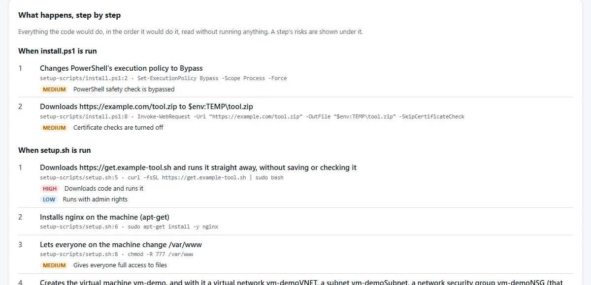
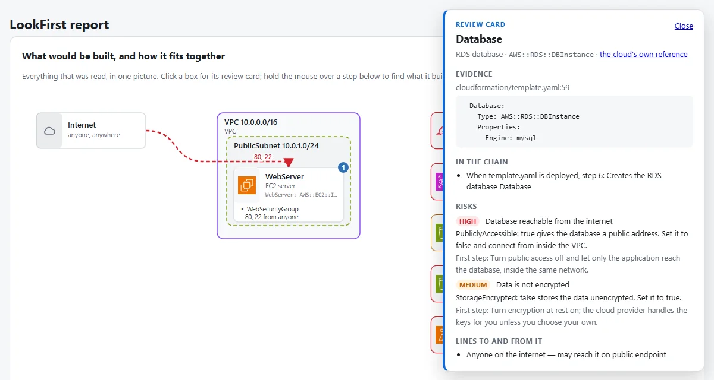

← All projectsOpen source
01 / 06
LookFirst
Shows what AI-written code does before you run it.
01 / 06
Shows what AI-written code does before you run it.
Code from an AI, a forum or a tutorial often works, and often does more than you think. It can open the server to the whole internet, write passwords into files, download and run other scripts, or start itself every time you log in.
LookFirst reads the code without running it and shows what it would build before anything happens.


